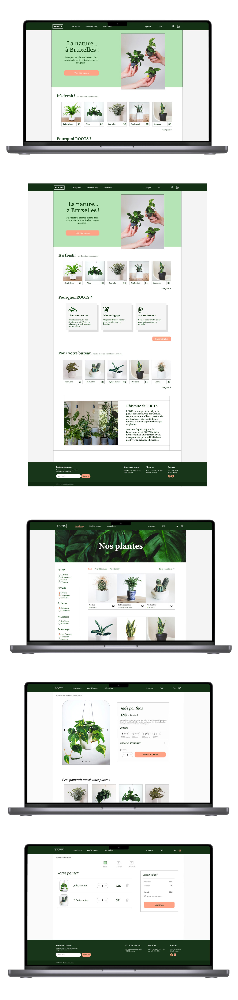
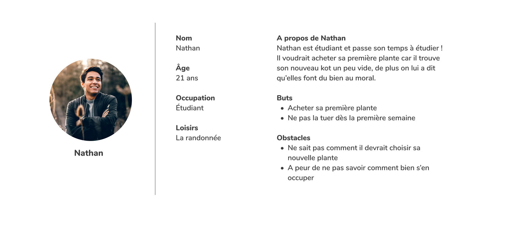
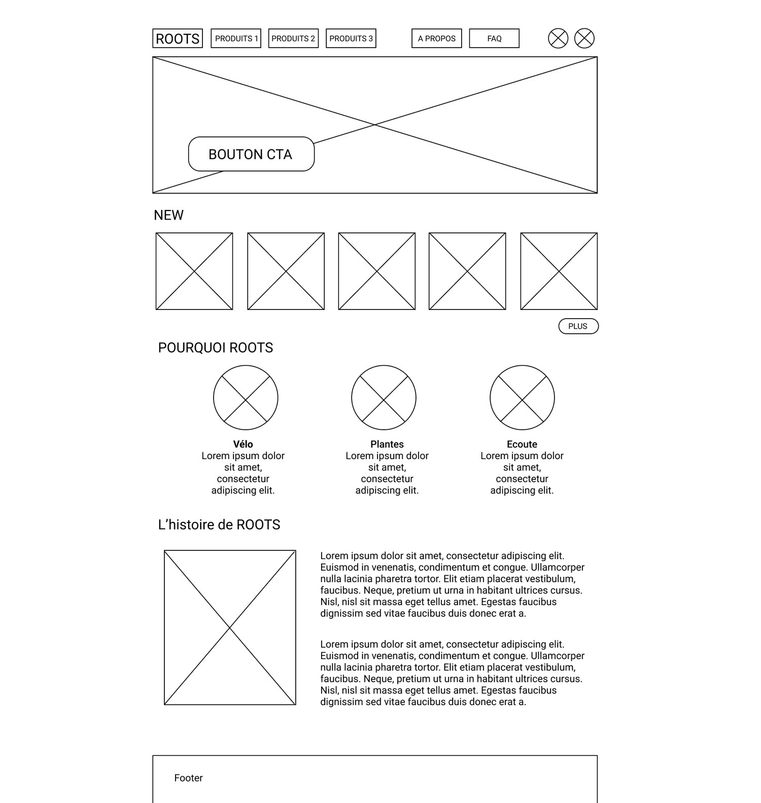
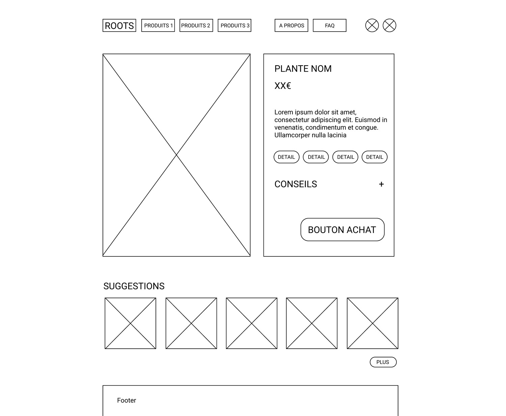
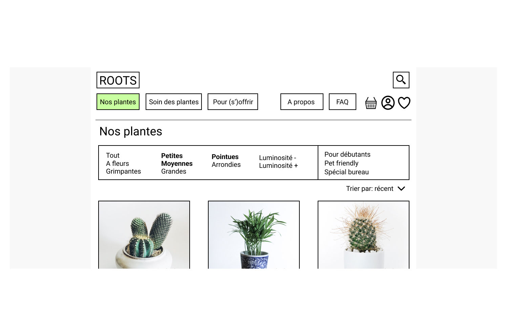
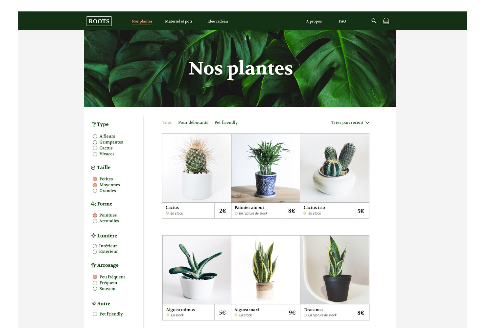
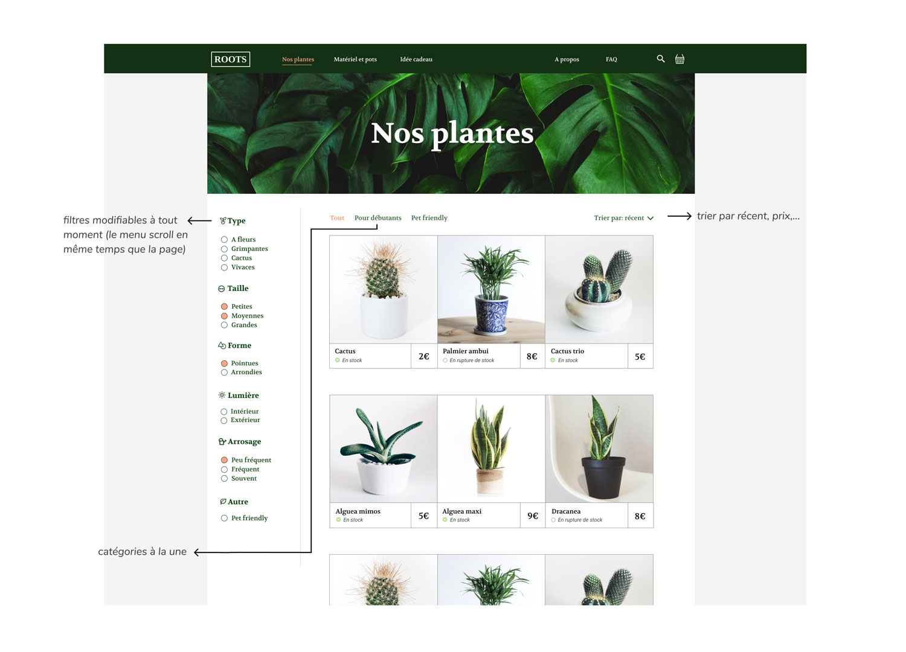
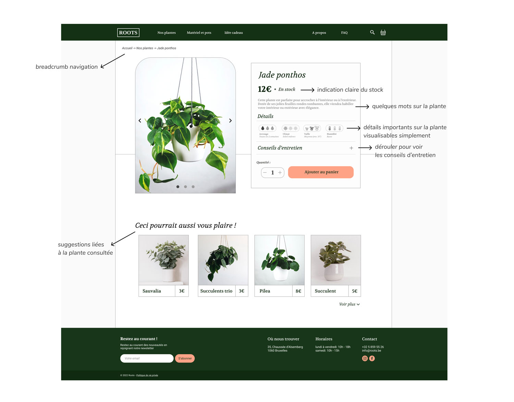
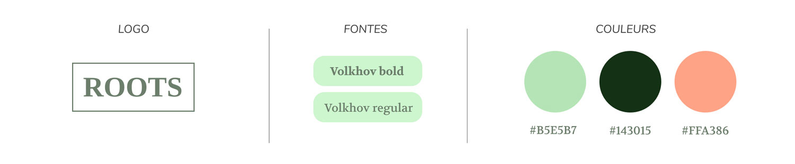

Le projet
- Boutique ROOTS plantes
- Site e-commerce
- Click & collect
- Livraisons à vélo
Rôles
- Branding
- Recherche UX
- Test utilisateurs
- Design UI
Livrables
- Prototypes cliquables
- Wireframes et IA
- User journey et persona
- Identité visuelle
Logiciels
- Figma
- Illustrator
- Photoshop
1. Résumé du projet
Création d'un site web d'e-commerce de plantes pour le click & collect et la livraison à vélo.
Il faut un site qui permette à tout un chacun de trouver aisément la plante qui lui convienne.
La plupart des sites d'e-commerce de plantes ne permettent pas de trouver facilement des plantes qui correspondent à nos critères.
Les plus experts de la main verte peuvent trouver sans encombres la plante qui leur convient mais pour les moins adeptes, voire débutants, les sites ne les rassurent pas.
Un système de filtrage par coches permettant de trouver la plante qui nous convient et une fiche produit qui recense un maximum d'informations sur la plante et sur comment s'en occuper !
Aider chacun et surtout les débutants à oser se lancer dans l'aventure des plantes !
2. Produit final
3. Compte rendu détaillé des recherches
Analyse compétitive / benchmark
Après une analyse de l'UX de 4 concurrents, 3 pain points se sont détachés:
- Les sites analysés avaient des catégories beaucoup trop larges (ex: plante d'intérieur/extérieur) qu'on pouvait souvent seulement filtrer par prix.
- Pas de possibilité de classer les plantes par taille, par fréquence d'arrosage,... ce qui fait que l'utilisateur doit à chaque fois ouvrir chaque fiche de plantes pour vérifier si elle lui convient.
Dans le cas où cela n'est pas indiqué sur la fiche, il doit se fier à ses connaissances ou quitter le site pour faire des recherches sur Internet ce qui n'est pas une bonne expérience utilisateur. - De plus les descriptions sur les fiches des plantes étaient trop longues et pas assez concises et/ou complètes; il faut un meilleur moyen de mettre de manière concises les informations importantes sur la plante et sur son entretien pour qu'elles soient compréhensibles rapidement et en un coup d'oeil.
Competitive user test
Sur base de competitive user tests réalisés à partir d'un task design et d'un think aloud protocol j'ai relevé 3 points supplémentaires à prendre en compte pendant l'élaboration du site:
- Bien indiquer les stocks: les utilisateurs se demandaient fréquemment si la plante qu'ils voulaient était en stock ou non.
- Les utilisateurs aimeraient avoir facilement des infos sur la plante (si elle a besoin d'être fréquemment arrosée,...), il faut donc bien indiquer toutes les informations dont les utilisateurs auraient besoin.
- Les plus novices aimeraient aussi avoir quelques conseils instantanés pour savoir comment s'occuper de la plante choisie, il faut imaginer une section sur la fiche de la plante avec des conseils.
User interviews
Sur base de différentes interviews utilisateur concernant leurs critères lorsqu'il est question d'achats de plantes, j'ai relevé 3 points importants :
- Certains les utilisent pour la déco, d'autres car ça leur fait du bien d'avoir de la nature chez eux.
- Ceux qui les utilisent pour la déco font plus attention à l'esthétique de la plante, à leur forme.
- Certains n'achètent pas souvent des plantes même s'ils aimeraient en avoir plus car ils ont peur de mal s'en occuper.
- Type (à fleurs, cactus,...)
- Taille
- Forme
- Lumière
- Fréquence d'arrosage
- Adaptée aux animaux domestiques
Ce qu'il faut retenir:
- Il faut un système de filtrage qui reprend les critères de choix des plantes relevés pendant les interviews (taille, forme, arrosage,...) - pas seulement des grandes catégories.
- Il faut que chaque plante ait une fiche complète qui communique aux gens une courte description sur la plante, des détails sur elle et des conseils sur son entretien.
- Il faut bien indiquer les stocks.
4. Quelques-uns des livrables développés après la recherche
Persona
Premiers wireframes
 5. User tests et itération
Voici les améliorations majeures apportées à l'UX du projet après des user tests conduits avec des prototypes allant du paper prototype à l'hi-fi prototype cliquable.
Les user test ont été effectués sur base d'un task design et d'un think aloud protocol.
1. UX writing
- plantes -> nos plantes
- soin des plantes -> matériel
- pour (s')offrir -> idées-cadeaux
Ces différentes sections ont été renommées car, pendant mes tests, j'ai remarqué qu'elles rendaient confuses les personnes:
- "Plantes" et "Soin des plantes" donnaient l'impression à certains utilisateurs qu'ils allaient atterrir sur une page leur parlant des plantes en général et de leur entretien.
- Pour (s')offrir était compliqué à lire avec la parenthèse, la lecture de la navigation du site était impactée par un manque de fluidité.
2. Sélection de plusieurs choix en même temps
Avec les premiers prototypes, les utilisateurs ne comprenaient pas qu'on pouvait choisir plusieurs filtres en même temps. Ils se mettaient en gras lorsqu'un était sélectionné. Pour rendre cela plus compréhensible, j'ai mis des ronds qui se remplissent devant chaque mot style "coche". (voir ci-dessous)
3. Menu des filtres scrollable
Le menu des filtres était d'abord situé à l'horizontale au-dessus, je l'ai déplacé sur le côté gauche à la verticale et rendu scrollable après avoir remarqué pendant les user tests que les personnes remontaient vers le haut pour affiner leur recherche. Ainsi, le menu suit le mouvement de la page et les utilisateurs peuvent modifier leur recherche à tout moment. 
4. Rajouter des icônes sur la fiche produit pour qu'on sache voir en un clin d'oeil les différentes caractéristiques des plantes
En plus des mots, j'ai rajouté des icônes qui communiquent rapidement chaque petit détail de la plante.6. Solutions
Voici les solutions principales développées après la recherche:
1. Navigation personnalisable
2. Fiche produit complète
7. Charte graphique

8. Ce que j'ai appris
Perfectionner l'ergonomie ne tient parfois qu'à des petits "détails" comme la façon dont on écrit des choses ou la façon dont est disposée l'interface.
Merci d'avoir lu mon article !
Retourner tout en haut

- App
- Seconde main
- Mode
- App
- Bibliothèque